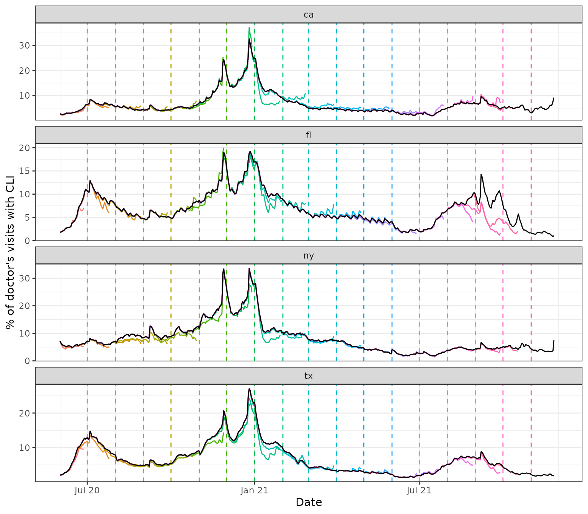
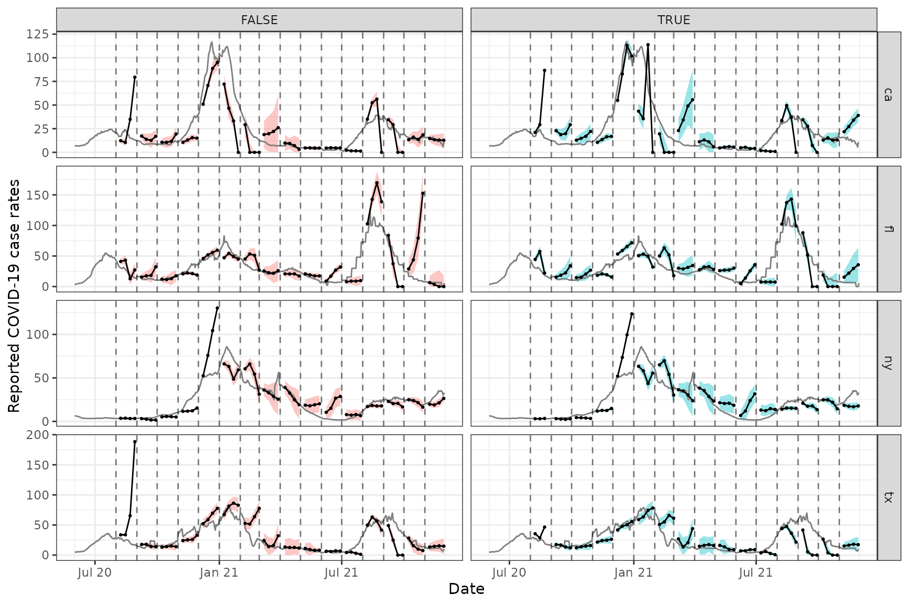

In addition to the epi_df data structure, the
epiprocess package has a companion structure called
epi_archive. In comparison to an epi_df
object, which can be seen as storing a single snapshot of a data set
with the most up-to-date signal values as of some given time, an
epi_archive object stores the full version history of a
data set. Many signals of interest for epidemiological tracking are
subject to revision (some more than others) and paying attention to data
revisions can be important for all sorts of downstream data analysis and
modeling tasks.
This vignette walks through working with epi_archive()
objects and demonstrates some of their key functionality. We’ll work
with a signal on the percentage of doctor’s visits with CLI (COVID-like
illness) computed from medical insurance claims, available through the
COVIDcast
API. This signal is subject to very heavy and regular revision; you
can read more about it on its API
documentation page.
library(epidatr)
library(epiprocess)
library(data.table)
library(dplyr)
library(purrr)
library(ggplot2)
dv <- pub_covidcast(
source = "doctor-visits",
signals = "smoothed_adj_cli",
geo_type = "state",
time_type = "day",
geo_values = "ca,fl,ny,tx",
time_values = epirange(20200601, 20211201),
issues = epirange(20200601, 20211201)
)Getting data into epi_archive format
An epi_archive() object can be constructed from a data
frame, data table, or tibble, provided that it has (at least) the
following columns:
-
geo_value: the geographic value associated with each row of measurements. -
time_value: the time value associated with each row of measurements. -
version: the time value specifying the version for each row of measurements. For example, if in a given row theversionis January 15, 2022 andtime_valueis January 14, 2022, then this row contains the measurements of the data for January 14, 2022 that were available one day later.
As we can see from the above, the data frame returned by
epidatr::pub_covidcast() has the columns required for the
epi_archive format, with issue playing the
role of version. We can now use
as_epi_archive() to bring it into epi_archive
format. For removal of redundant version updates in
as_epi_archive using compactify, please refer to the compactify vignette.
x <- dv %>%
select(geo_value, time_value, version = issue, percent_cli = value) %>%
as_epi_archive(compactify = TRUE)
class(x)
print(x)## [1] "epi_archive"## → An `epi_archive` object, with metadata:
## ℹ Min/max time values: 2020-06-01 / 2021-11-30
## ℹ First/last version with update: 2020-06-02 / 2021-12-01
## ℹ Versions end: 2021-12-01
## ℹ A preview of the table (119316 rows x 4 columns):
## Key: <geo_value, time_value, version>
## geo_value time_value version percent_cli
## <char> <Date> <Date> <num>
## 1: ca 2020-06-01 2020-06-02 NA
## 2: ca 2020-06-01 2020-06-06 2.140116
## 3: ca 2020-06-01 2020-06-08 2.140379
## 4: ca 2020-06-01 2020-06-09 2.114430
## 5: ca 2020-06-01 2020-06-10 2.133677
## ---
## 119312: tx 2021-11-26 2021-11-29 1.858596
## 119313: tx 2021-11-27 2021-11-28 NA
## 119314: tx 2021-11-28 2021-11-29 NA
## 119315: tx 2021-11-29 2021-11-30 NA
## 119316: tx 2021-11-30 2021-12-01 NAAn epi_archive is consists of a primary field
DT, which is a data table (from the data.table
package) that has the columns geo_value,
time_value, version (and possibly additional
ones), and other metadata fields, such as geo_type.
class(x$DT)## [1] "data.table" "data.frame"
head(x$DT)## Key: <geo_value, time_value, version>
## geo_value time_value version percent_cli
## <char> <Date> <Date> <num>
## 1: ca 2020-06-01 2020-06-02 NA
## 2: ca 2020-06-01 2020-06-06 2.140116
## 3: ca 2020-06-01 2020-06-08 2.140379
## 4: ca 2020-06-01 2020-06-09 2.114430
## 5: ca 2020-06-01 2020-06-10 2.133677
## 6: ca 2020-06-01 2020-06-11 2.197207The variables geo_value, time_value,
version serve as key variables for the
data table, as well as any other specified in the metadata (described
below). There can only be a single row per unique combination of key
variables, and therefore the key variables are critical for figuring out
how to generate a snapshot of data from the archive, as of a given
version (also described below).
key(x$DT)## [1] "geo_value" "time_value" "version"In general, the last version of each observation is carried forward (LOCF) to fill in data between recorded versions.
Some details on metadata
The following pieces of metadata are included as fields in an
epi_archive object:
-
geo_type: the type for the geo values. -
additional_metadata: list of additional metadata for the data archive.
Metadata for an epi_archive object x can be
accessed (and altered) directly, as in x$geo_type, etc.
Just like as_epi_df(), the function
as_epi_archive() attempts to guess metadata fields when an
epi_archive object is instantiated, if they are not
explicitly specified in the function call (as it did in the case
above).
Summarizing Revision Behavior
There are many ways to examine the ways that signals change across
different revisions. The simplest that is included directly in
epiprocess is revision_summary(), which computes simple
summary statistics for each key (by default,
(geo_value,time_value) pairs), such as the lag to the first
value (latency). In addition to the per key summary, it also returns an
overall summary:
revision_details <- revision_summary(x, print_inform = TRUE)## Min lag (time to first version):## min median mean max
## 3 days 3 days 3.5 days 12 days## Fraction of epi_key+time_values with
## No revisions:
## • 0 out of 1,956 (0%)
##
## Quick revisions (last revision within 3 days of the `time_value`):
## • 0 out of 1,956 (0%)
##
## Few revisions (At most 3 revisions for that `time_value`):
## • 0 out of 1,956 (0%)
##
##
## Fraction of revised epi_key+time_values which have:
## Less than 0.1 spread in relative value:
## • 91 out of 1,956 (4.65%)
##
## Spread of more than 2.22056495 in actual value (when revised):
## • 671 out of 1,956 (34.3%)
##
## days until within 20% of the latest value:## min median mean max
## 3 days 5 days 9.1 days 67 daysSo as was mentioned at the top, this is clearly a data set where basically everything has some amount of revisions, only 0.37% have no revision at all, and 0.92 have fewer than 3. Over 94% change by more than 10%. On the other hand, most are within plus or minus 20% within 5-9 days, so the revisions converge relatively quickly, even if the revisions continue for longer.
To do more detailed analysis than is possible with the above
printing, we have revision_details:
revision_details %>%
group_by(geo_value) %>%
summarise(
n_rev = mean(n_revisions),
min_lag = min(min_lag),
max_lag = max(max_lag),
spread = mean(spread),
rel_spread = mean(rel_spread),
time_near_latest = mean(time_near_latest)
)## # A tibble: 4 × 7
## geo_value n_rev min_lag max_lag spread rel_spread time_near_latest
## <chr> <dbl> <drtn> <drtn> <dbl> <dbl> <drtn>
## 1 ca 56.4 3 days 74 days 2.53 0.304 11.278119 days
## 2 fl 56.4 3 days 74 days 2.29 0.280 10.830266 days
## 3 ny 56.4 3 days 74 days 1.98 0.206 6.977505 days
## 4 tx 56.4 3 days 74 days 1.63 0.218 7.398773 daysMost of the states have similar stats on most of these features, except for Florida, which takes nearly double the amount of time to get close to the right value, with California not too far behind.
Producing snapshots in epi_df form
A key method of an epi_archive class is
epix_as_of(), which generates a snapshot of the archive in
epi_df format. This represents the most up-to-date values
of the signal variables as of a given version.
x_snapshot <- epix_as_of(x, max_version = as.Date("2021-06-01"))
class(x_snapshot)## [1] "epi_df" "tbl_df" "tbl" "data.frame"
head(x_snapshot)## An `epi_df` object, 6 x 3 with metadata:
## * geo_type = state
## * time_type = day
## * as_of = 2021-06-01
##
## # A tibble: 6 × 3
## geo_value time_value percent_cli
## * <chr> <date> <dbl>
## 1 ca 2020-06-01 2.75
## 2 ca 2020-06-02 2.57
## 3 ca 2020-06-03 2.48
## 4 ca 2020-06-04 2.41
## 5 ca 2020-06-05 2.57
## 6 ca 2020-06-06 2.63
max(x_snapshot$time_value)## [1] "2021-05-31"
attributes(x_snapshot)$metadata$as_of## [1] "2021-06-01"We can see that the max time value in the epi_df object
x_snapshot that was generated from the archive is May 29,
2021, even though the specified version date was June 1, 2021. From this
we can infer that the doctor’s visits signal was 2 days latent on June
1. Also, we can see that the metadata in the epi_df object
has the version date recorded in the as_of field.
By default, using the maximum of the version column in
the underlying data table in an epi_archive object itself
generates a snapshot of the latest values of signal variables in the
entire archive. The epix_as_of() function issues a warning
in this case, since updates to the current version may still come in at
a later point in time, due to various reasons, such as synchronization
issues.
x_latest <- epix_as_of(x, max_version = max(x$DT$version))Below, we pull several snapshots from the archive, spaced one month
apart. We overlay the corresponding signal curves as colored lines, with
the version dates marked by dotted vertical lines, and draw the latest
curve in black (from the latest snapshot x_latest that the
archive can provide).
theme_set(theme_bw())
self_max <- max(x$DT$version)
versions <- seq(as.Date("2020-06-01"), self_max - 1, by = "1 month")
snapshots <- map_dfr(versions, function(v) {
epix_as_of(x, max_version = v) %>% mutate(version = v)
}) %>%
bind_rows(
x_latest %>% mutate(version = self_max)
) %>%
mutate(latest = version == self_max)
ggplot(
snapshots %>% filter(!latest),
aes(x = time_value, y = percent_cli)
) +
geom_line(aes(color = factor(version)), na.rm = TRUE) +
geom_vline(aes(color = factor(version), xintercept = version), lty = 2) +
facet_wrap(~geo_value, scales = "free_y", ncol = 1) +
scale_x_date(minor_breaks = "month", date_labels = "%b %y") +
labs(x = "Date", y = "% of doctor's visits with CLI") +
theme(legend.position = "none") +
geom_line(
data = snapshots %>% filter(latest),
aes(x = time_value, y = percent_cli),
inherit.aes = FALSE, color = "black", na.rm = TRUE
)
We can see some interesting and highly nontrivial revision behavior: at some points in time the provisional data snapshots grossly underestimate the latest curve (look in particular at Florida close to the end of 2021), and at others they overestimate it (both states towards the beginning of 2021), though not quite as dramatically. Modeling the revision process, which is often called backfill modeling, is an important statistical problem in it of itself.
Merging epi_archive objects
Now we demonstrate how to merge two epi_archive objects
together, e.g., so that grabbing data from multiple sources as of a
particular version can be performed with a single
epix_as_of call. The function epix_merge() is
made for this purpose. Below we merge the working
epi_archive of versioned percentage CLI from outpatient
visits to another one of versioned COVID-19 case reporting data, which
we fetch the from the COVIDcast
API, on the rate scale (counts per 100,000 people in the
population).
When merging archives, unless the archives have identical data
release patterns, NAs can be introduced in the non-key
variables for a few reasons: - to represent the “value” of an
observation before its initial release (when we need to pair it with
additional observations from the other archive that have been released)
- to represent the “value” of an observation that has no recorded
versions at all (in the same sort of situation) - if requested via
sync="na", to represent potential update data that we do
not yet have access to (e.g., due to encountering issues while
attempting to download the currently available version data for one of
the archives, but not the other).
y <- pub_covidcast(
source = "jhu-csse",
signals = "confirmed_7dav_incidence_prop",
geo_type = "state",
time_type = "day",
geo_values = "ca,fl,ny,tx",
time_values = epirange(20200601, 20211201),
issues = epirange(20200601, 20211201)
) %>%
select(geo_value, time_value, version = issue, case_rate_7d_av = value) %>%
as_epi_archive(compactify = TRUE)
x <- epix_merge(x, y, sync = "locf", compactify = TRUE)
print(x)
head(x$DT)## → An `epi_archive` object, with metadata:
## ℹ Min/max time values: 2020-06-01 / 2021-11-30
## ℹ First/last version with update: 2020-06-02 / 2021-12-01
## ℹ Versions end: 2021-12-01
## ℹ A preview of the table (129638 rows x 5 columns):
## Key: <geo_value, time_value, version>
## geo_value time_value version percent_cli case_rate_7d_av
## <char> <Date> <Date> <num> <num>
## 1: ca 2020-06-01 2020-06-02 NA 6.628329
## 2: ca 2020-06-01 2020-06-06 2.140116 6.628329
## 3: ca 2020-06-01 2020-06-07 2.140116 6.628329
## 4: ca 2020-06-01 2020-06-08 2.140379 6.628329
## 5: ca 2020-06-01 2020-06-09 2.114430 6.628329
## ---
## 129634: tx 2021-11-26 2021-11-29 1.858596 7.957657
## 129635: tx 2021-11-27 2021-11-28 NA 7.174299
## 129636: tx 2021-11-28 2021-11-29 NA 6.834681
## 129637: tx 2021-11-29 2021-11-30 NA 8.841247
## 129638: tx 2021-11-30 2021-12-01 NA 9.566218## Key: <geo_value, time_value, version>
## geo_value time_value version percent_cli case_rate_7d_av
## <char> <Date> <Date> <num> <num>
## 1: ca 2020-06-01 2020-06-02 NA 6.628329
## 2: ca 2020-06-01 2020-06-06 2.140116 6.628329
## 3: ca 2020-06-01 2020-06-07 2.140116 6.628329
## 4: ca 2020-06-01 2020-06-08 2.140379 6.628329
## 5: ca 2020-06-01 2020-06-09 2.114430 6.628329
## 6: ca 2020-06-01 2020-06-10 2.133677 6.628329Sliding version-aware computations
Lastly, we demonstrate another key method for archives, which is the
epix_slide(). It works just like epi_slide()
does for an epi_df object, but with one key difference: it
performs version-aware computations. That is, for the computation at any
given reference time t, it only uses data that would have been
available as of t.
For the demonstration, we’ll revisit the forecasting example from the
slide
vignette, and now we’ll build a forecaster that uses
properly-versioned data (that would have been available in real-time) to
forecast future COVID-19 case rates from current and past COVID-19 case
rates, as well as current and past values of the outpatient CLI signal
from medical claims. We’ll extend the prob_ar() function
from the slide vignette to accomodate exogenous variables in the
autoregressive model, which is often referred to as an ARX model.
prob_arx <- function(x, y, lags = c(0, 7, 14), ahead = 7, min_train_window = 20,
lower_level = 0.05, upper_level = 0.95, symmetrize = TRUE,
intercept = FALSE, nonneg = TRUE) {
# Return NA if insufficient training data
if (length(y) < min_train_window + max(lags) + ahead) {
return(data.frame(point = NA, lower = NA, upper = NA))
}
# Useful transformations
if (!missing(x)) {
x <- data.frame(x, y)
} else {
x <- data.frame(y)
}
if (!is.list(lags)) lags <- list(lags)
lags <- rep(lags, length.out = ncol(x))
# Build features and response for the AR model, and then fit it
dat <- do.call(
data.frame,
unlist( # Below we loop through and build the lagged features
purrr::map(seq_len(ncol(x)), function(i) {
purrr::map(lags[[i]], function(j) lag(x[, i], n = j))
}),
recursive = FALSE
)
)
names(dat) <- paste0("x", seq_len(ncol(dat)))
if (intercept) dat$x0 <- rep(1, nrow(dat))
dat$y <- lead(y, n = ahead)
obj <- lm(y ~ . + 0, data = dat)
# Use LOCF to fill NAs in the latest feature values, make a prediction
setDT(dat)
setnafill(dat, type = "locf")
point <- predict(obj, newdata = tail(dat, 1))
# Compute a band
r <- residuals(obj)
s <- ifelse(symmetrize, -1, NA) # Should the residuals be symmetrized?
q <- quantile(c(r, s * r), probs = c(lower_level, upper_level), na.rm = TRUE)
lower <- point + q[1]
upper <- point + q[2]
# Clip at zero if we need to, then return
if (nonneg) {
point <- max(point, 0)
lower <- max(lower, 0)
upper <- max(upper, 0)
}
return(data.frame(point = point, lower = lower, upper = upper))
}Next we slide this forecaster over the working
epi_archive object, in order to forecast COVID-19 case
rates 7 days into the future.
fc_time_values <- seq(as.Date("2020-08-01"),
as.Date("2021-11-30"),
by = "1 month"
)
z <- x %>%
group_by(geo_value) %>%
epix_slide(
fc = prob_arx(x = percent_cli, y = case_rate_7d_av), before = 119,
ref_time_values = fc_time_values
) %>%
ungroup()
head(z, 10)## # A tibble: 10 × 5
## geo_value time_value fc_point fc_lower fc_upper
## <chr> <date> <dbl> <dbl> <dbl>
## 1 ca 2020-08-01 21.0 19.1 23.0
## 2 fl 2020-08-01 44.5 38.9 50.0
## 3 ny 2020-08-01 3.10 2.89 3.31
## 4 tx 2020-08-01 35.5 33.6 37.4
## 5 ca 2020-09-01 22.9 20.1 25.8
## 6 fl 2020-09-01 15.5 10.5 20.6
## 7 ny 2020-09-01 3.16 2.93 3.39
## 8 tx 2020-09-01 17.5 14.3 20.7
## 9 ca 2020-10-01 12.8 9.21 16.5
## 10 fl 2020-10-01 14.7 8.72 20.6We get back a tibble z with the grouping variables (here
geo value), the time values, and three columns fc_point,
fc_lower, and fc_upper produced by the slide
computation that correspond to the point forecast, and the lower and
upper endpoints of the 95% prediction band, respectively. (If instead we
had set as_list_col = TRUE in the call to
epix_slide(), then we would have gotten a list column
fc, where each element of fc is a data frame
with named columns point, lower, and
upper.)
On the whole, epix_slide() works similarly to
epix_slide(), though there are a few notable differences,
even apart from the version-aware aspect. You can read the documentation
for epix_slide() for details.
We finish off by comparing version-aware and -unaware forecasts at
various points in time and forecast horizons. The former comes from
using epix_slide() with the epi_archive object
x, and the latter from applying epi_slide() to
the latest snapshot of the data x_latest.
x_latest <- epix_as_of(x, max_version = max(x$DT$version))
# Simple function to produce forecasts k weeks ahead
k_week_ahead <- function(x, ahead = 7, as_of = TRUE) {
if (as_of) {
x %>%
group_by(.data$geo_value) %>%
epix_slide(
fc = prob_arx(.data$percent_cli, .data$case_rate_7d_av, ahead = ahead), before = 119,
ref_time_values = fc_time_values
) %>%
mutate(target_date = .data$time_value + ahead, as_of = TRUE) %>%
ungroup()
} else {
x_latest %>%
group_by(.data$geo_value) %>%
epi_slide(
fc = prob_arx(.data$percent_cli, .data$case_rate_7d_av, ahead = ahead), before = 119,
ref_time_values = fc_time_values
) %>%
mutate(target_date = .data$time_value + ahead, as_of = FALSE) %>%
ungroup()
}
}
# Generate the forecasts, and bind them together
fc <- bind_rows(
k_week_ahead(x, ahead = 7, as_of = TRUE),
k_week_ahead(x, ahead = 14, as_of = TRUE),
k_week_ahead(x, ahead = 21, as_of = TRUE),
k_week_ahead(x, ahead = 28, as_of = TRUE),
k_week_ahead(x, ahead = 7, as_of = FALSE),
k_week_ahead(x, ahead = 14, as_of = FALSE),
k_week_ahead(x, ahead = 21, as_of = FALSE),
k_week_ahead(x, ahead = 28, as_of = FALSE)
)
# Plot them, on top of latest COVID-19 case rates
ggplot(fc, aes(x = target_date, group = time_value, fill = as_of)) +
geom_ribbon(aes(ymin = fc_lower, ymax = fc_upper), alpha = 0.4) +
geom_line(
data = x_latest, aes(x = time_value, y = case_rate_7d_av),
inherit.aes = FALSE, color = "gray50"
) +
geom_line(aes(y = fc_point)) +
geom_point(aes(y = fc_point), size = 0.5) +
geom_vline(aes(xintercept = time_value), linetype = 2, alpha = 0.5) +
facet_grid(vars(geo_value), vars(as_of), scales = "free") +
scale_x_date(minor_breaks = "month", date_labels = "%b %y") +
labs(x = "Date", y = "Reported COVID-19 case rates") +
theme(legend.position = "none")
Each row displays the forecasts for a different location (CA, FL, NY,
and TX), and each column corresponds to whether properly-versioned data
is used (FALSE means no, and TRUE means yes).
We can see that the properly-versioned forecaster is, at some points in
time, more problematic; for example, it massively overpredicts the peak
in both locations in winter wave of 2020. However, performance is pretty
poor across the board here, whether or not properly-versioned data is
used. Similar to what we saw in the slide
vignette, the ARX forecasts can too volatile, overconfident, or
both.
Some of the volatility can be attenuated here by training an ARX
model jointly over locations; the advanced
sliding vignette gives a demonstration of how to do this. But
really, the epipredict
package, which builds off the data structures and functionality in the
current package, is the place to look for more robust forecasting
methodology. The forecasters that appear in the vignettes in the current
package are only meant to demo the slide functionality with some of the
most basic forecasting methodology possible.
Attribution
This document contains a dataset that is a modified part of the COVID-19 Data Repository by the Center for Systems Science and Engineering (CSSE) at Johns Hopkins University as republished in the COVIDcast Epidata API. This data set is licensed under the terms of the Creative Commons Attribution 4.0 International license by the Johns Hopkins University on behalf of its Center for Systems Science in Engineering. Copyright Johns Hopkins University 2020.
The percent_cli data is a modified part of the COVIDcast
Epidata API Doctor Visits data. This dataset is licensed under the
terms of the Creative Commons
Attribution 4.0 International license. Copyright Delphi Research
Group at Carnegie Mellon University 2020.